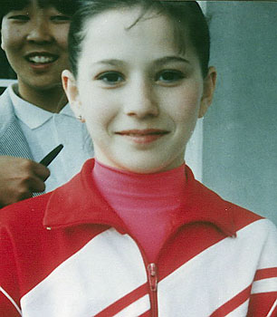

Svetlana Avdeeva (USSR)
1990 Bosphorus Cup AA Silver Medalist

Svetlana was coached by Elvira Saadi at Dinamo Moscow.
Competition Results
1990
Bosphorus Cup: 2nd AA
USSR Championships: 18th AA
1991
Massilia Gym Cup: 11th AA
USSR Championships/USSR Spartakiade: 17th AA, 3rd B
World Sports Fair: 7th AA
This page was created on May 12,
2009 and was last updated on September 18, 2026.
© Gymn Forum